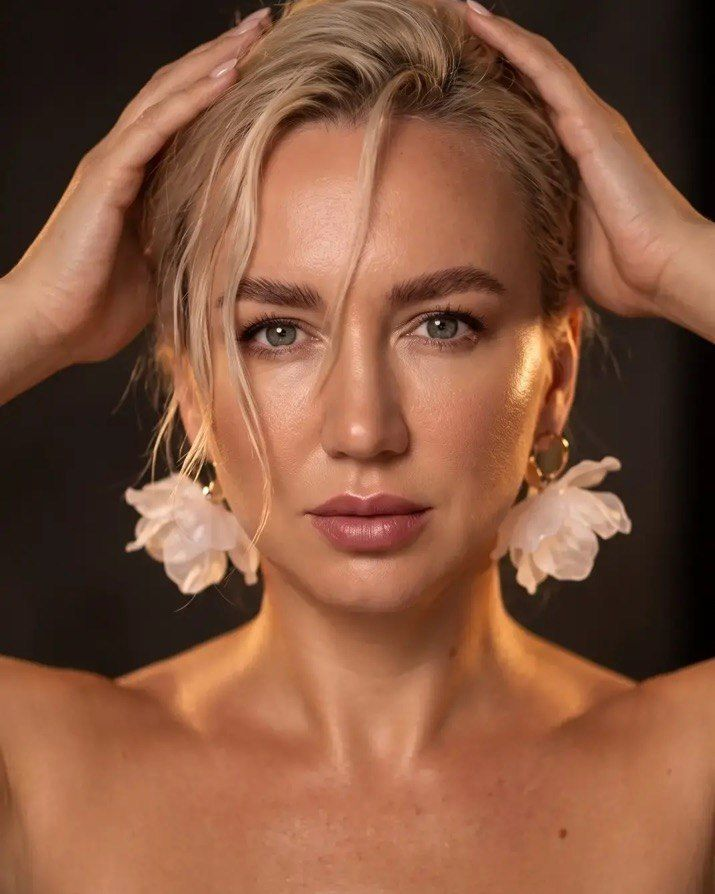
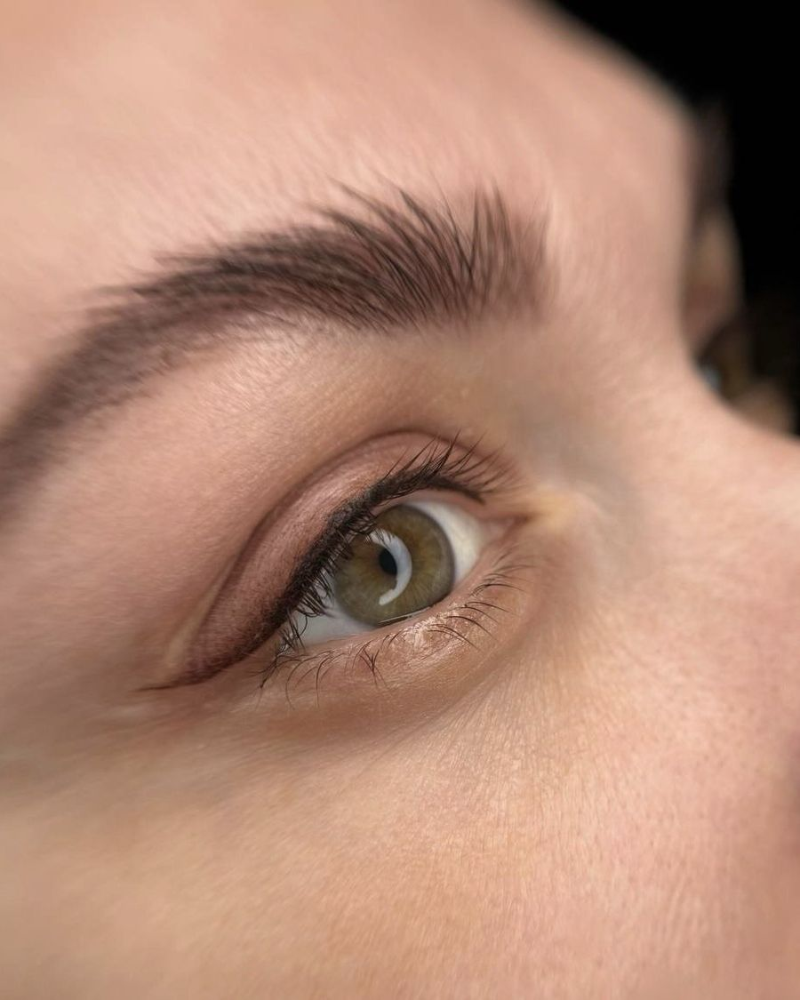
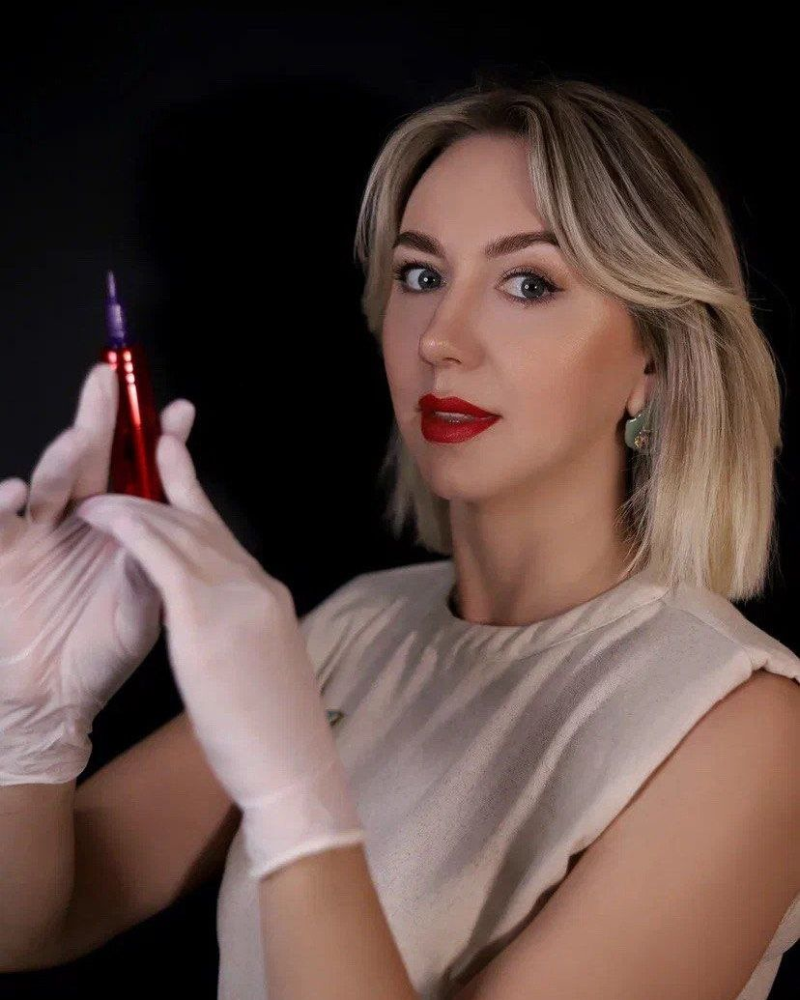
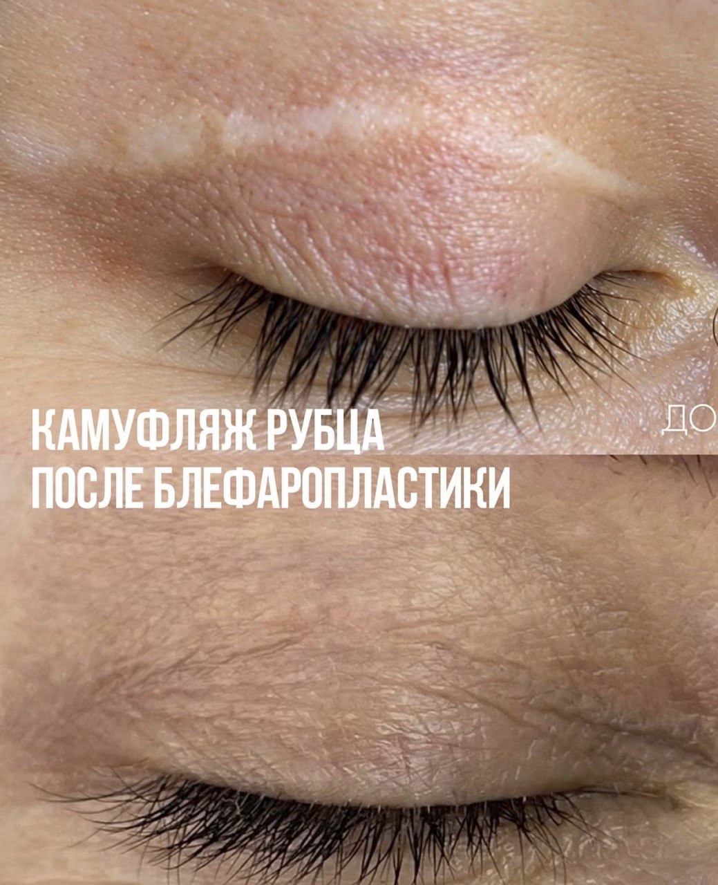
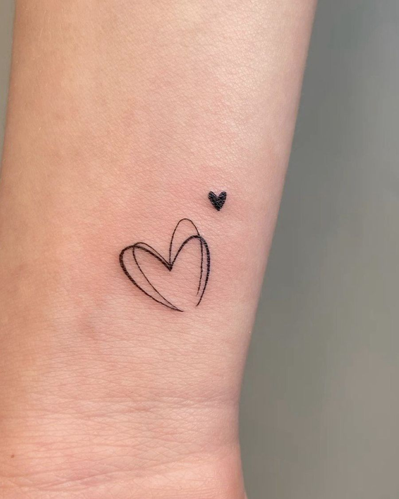
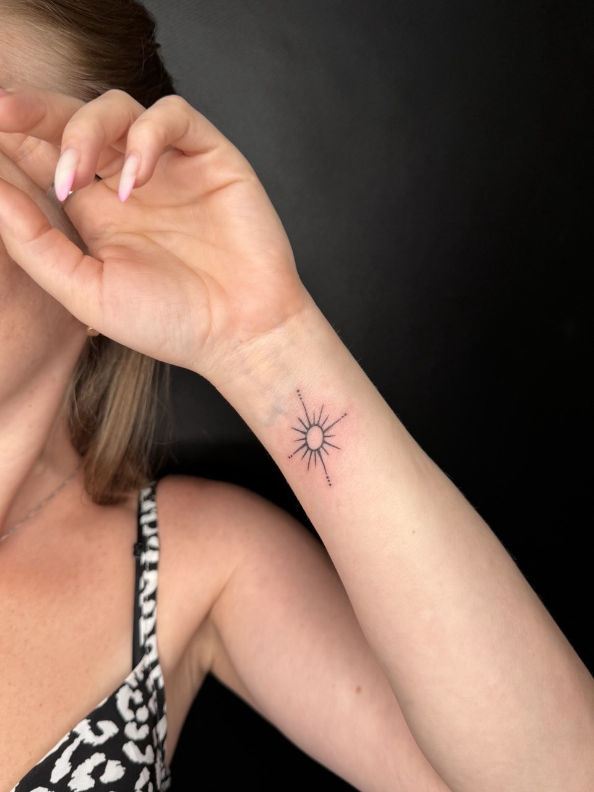

Татуаж и перманентный макияж в Ростове-на-Дону
Брови, губы и стрелки, которые не нужно рисовать каждое утро. Только натуральные техники и честно показываю, как всё заживает
Купон для новых клиенток. Две зоны в один день, например брови и губы, со скидкой 2 000 ₽. Нажмите кнопку и напишите мне: после этого купоном можно воспользоваться в течение 2 месяцев
Получить купонЧто я делаю

Брови
пудровое напыление, волоскиот 7 000 ₽
Губы
акварель и помадаот 7 000 ₽
Веки и межресничка
стрелка, растушёвка, межресничкаот 5 000 ₽Удаление татуажа
лазером и ремувером2 000 ₽ за сеансА ещё камуфляж шрамов и растяжек, реконструкция ареол и мини-тату - о них ниже
Листайте дни заживления
Сразу после процедуры цвет всегда ярче, чем будет. Через месяц он становится мягче и естественнее. Здесь видно, как это происходит день за днём, чтобы вы заранее знали, чего ждать


Сложный случай: губы после рубца
Клиентка пришла с рубцом на верхней губе. Мы закрасили рубец под цвет губ и выровняли форму. Сдвиньте ползунок, чтобы сравнить «до» и «сразу после процедуры»
Через месяц цвет станет мягче, как на ползунке дней заживления

 ДоСразу после
ДоСразу после
Мои работы


У красоты нет возрастных границ
Я работаю с девушками и женщинами любого возраста. Перманент помогает, когда брови поредели, а контур губ стал менее чётким, и делает лицо свежее без ежедневного макияжа

Почему клиентки возвращаются
- Объясняю всё до началаРисую эскиз, показываю цвет и материалы. Начинаем, когда вам всё понятно и не страшно
- Только натуральные техникиБез татуировки на лице. Форму и оттенок подбираю под ваше лицо
- Цвет сначала проверяю на кожеЕсли что-то идёт не так, корректируем до начала процедуры
- Не больноРаботаю с анестезией, ощущается лёгкое покалывание
- С собой всё для заживленияКаждой клиентке даю пакетик по уходу с памяткой, что можно и что нельзя
- Отвечаю и до записиМожно написать, прислать фото и спокойно всё обсудить
Как всё проходит
Цены
Страхи и частые вопросы
Это больно?
Нет. Я использую анестезию, ощущается лёгкое покалывание. Клиентки у меня правда засыпают на процедуре
Это же татуировка?
Нет. Пигменты другие, глубина другая и цель другая. Татуировка навсегда, а перманент даёт естественный вид на пару лет. Со стороны часто даже не догадываются, что он есть
А если будет пятно?
Пятно бывает, когда мастер работает «на авось». Цвет я сначала проверяю на коже, и если что-то идёт не так, корректируем до начала
Сколько держится?
Обычно 1,5-2 года, потом цвет постепенно светлеет. Освежить можно обновлением через 1-1,5 года. Плотные и яркие работы держатся дольше
Это навсегда?
Нет, и это плюс. Лицо меняется, мода меняется, вы меняетесь, а перманент всегда можно освежить или изменить
Татуаж и перманентный макияж - это одно и то же?
Да. «Татуаж» - привычное старое название, «перманентный макияж» - современное. Я работаю только в натуральных техниках, без татуировки на лице
Почему сразу после так ярко?
Сразу после процедуры цвет всегда насыщеннее. За 7-10 дней кожа шелушится, а к месяцу цвет проявляется мягким и естественным. Листайте дни заживления выше
Зачем нужна коррекция?
Кожа заживает по-разному, и часть пигмента может уйти. Коррекция через 1-2 месяца закрепляет цвет и доводит форму
Сколько длится процедура?
1,5-2 часа на любую зону. Сначала рисую эскиз и показываю цвет, начинаем, когда вам всё понятно
Перманент только для молодых?
Нет. Я работаю с девушками и женщинами любого возраста. Перманент помогает и тогда, когда брови поредели или контур губ стал менее чётким

Камуфляж шрамов, растяжек и ареолы
Подбираю пигмент под цвет вашей кожи, чтобы шрам или растяжка стали менее заметны. Ареолы восстанавливаю по форме и цвету
Каждый случай разный, поэтому цену камуфляжа называю по фото. Реконструкция ареол - 10 000 ₽


Мини-тату и надписи
Небольшие тату на память: надписи, символы, ваши идеи. 2 000-5 000 ₽, зависит от размера и сложности
Подарочный сертификат
На любую сумму и любую процедуру. Хороший подарок на день рождения или праздник
Студия под Ростовом
Янтарная ул., 17, хутор Красный Крым, Мясниковский район, Ростовская область
30-40 минут на машине от центра Ростова-на-Дону. Принимаю по записи